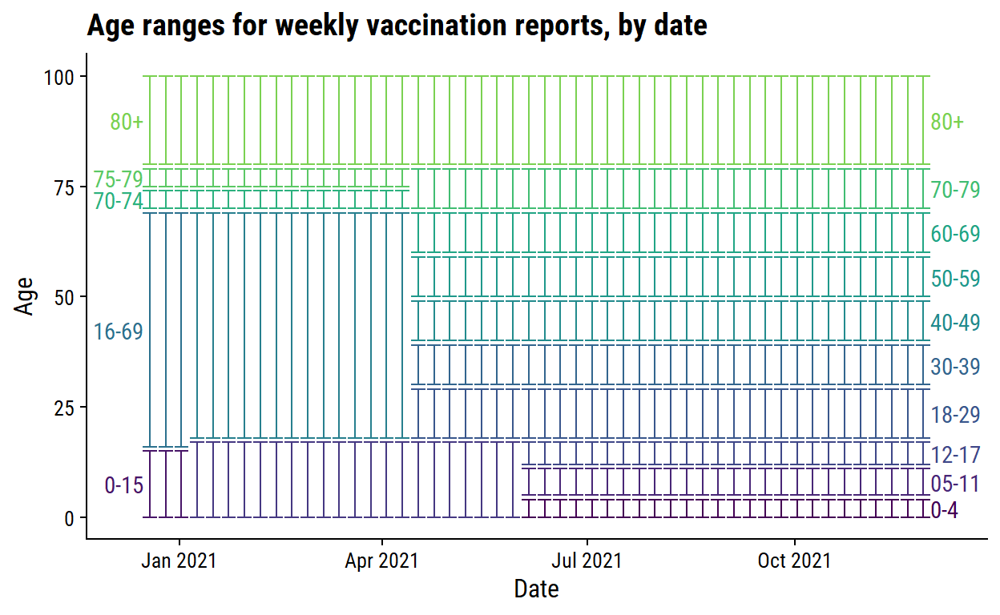
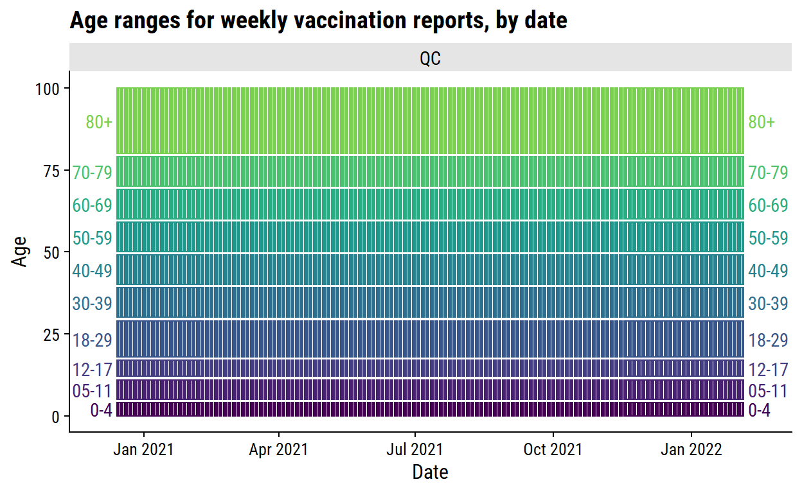
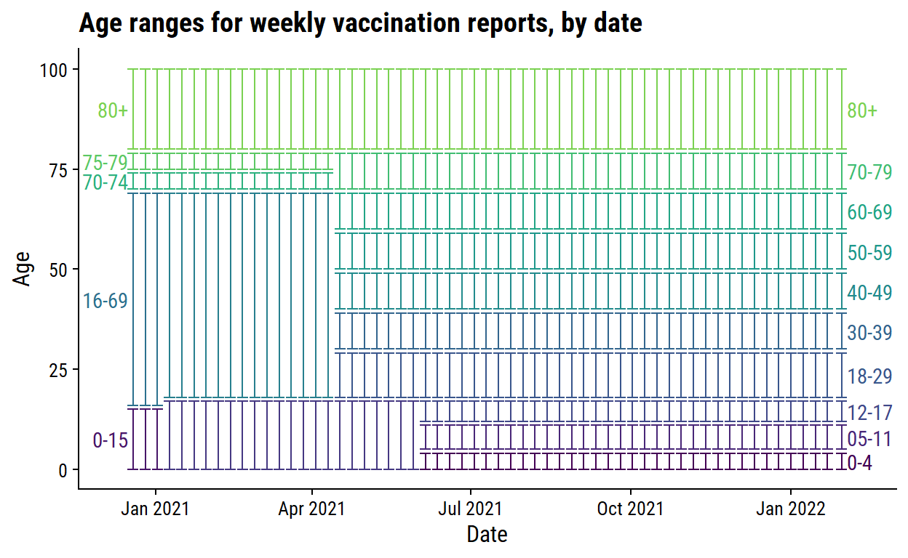

An exploration of the Canadian COVID-19 tracker API.
knitr::opts_chunk$set(echo = TRUE)
library(tidyverse)
library(patchwork)
library(httr)
library(dunnr)
extrafont::loadfonts(device = "win", quiet = TRUE)
theme_set(theme_td())
set_geom_fonts()
set_palette()
With this post, I will explore the Canadian COVID-19 tracker API and, depending on how it goes, turn some of the code into an R package. For an introduction to working with APIs, see this vignette from the httr package.
The first data I will retrieve is the data summaries overall, by province, and by health region. To save typing it every time, the following base_url is required for all GET requests:
base_url <- "https://api.covid19tracker.ca/"
Modify the URL with summary to get the latest data across all provinces:
api_url <- paste0(base_url, "summary")
Send the GET request with httr:
resp <- httr::GET(api_url)
resp
Response [https://api.covid19tracker.ca/summary]
Date: 2021-12-30 19:54
Status: 200
Content-Type: application/json
Size: 645 BThis returned a response object with the following structure:
str(resp, max.level = 1)
List of 10
$ url : chr "https://api.covid19tracker.ca/summary"
$ status_code: int 200
$ headers :List of 12
..- attr(*, "class")= chr [1:2] "insensitive" "list"
$ all_headers:List of 1
$ cookies :'data.frame': 0 obs. of 7 variables:
$ content : raw [1:645] 7b 22 64 61 ...
$ date : POSIXct[1:1], format: "2021-12-30 19:54:39"
$ times : Named num [1:6] 0 0.00383 0.04411 0.13218 0.18173 ...
..- attr(*, "names")= chr [1:6] "redirect" "namelookup" "connect" "pretransfer" ...
$ request :List of 7
..- attr(*, "class")= chr "request"
$ handle :Class 'curl_handle' <externalptr>
- attr(*, "class")= chr "response"The status_code is the first thing to check:
resp$status_code
[1] 200An HTTP status code of 200 is the standard indicator of a successful request.
Once confirmed successful, the content returned from the request is:
head(resp$content, 25)
[1] 7b 22 64 61 74 61 22 3a 5b 7b 22 6c 61 74 65 73 74 5f 64 61 74 65
[23] 22 3a 22Looks like the raw data is represented in hexadecimal. The httr::content function can parse this data:
List of 2
$ data :List of 1
..$ :List of 21
.. ..$ latest_date : chr "2021-12-30"
.. ..$ change_cases : chr "30218"
.. ..$ change_fatalities : chr "24"
.. ..$ change_tests : chr "384379"
.. ..$ change_hospitalizations : chr "378"
.. ..$ change_criticals : chr "25"
.. ..$ change_recoveries : chr "14457"
.. ..$ change_vaccinations : chr "304006"
.. ..$ change_vaccinated : chr "8977"
.. ..$ change_boosters_1 : chr "277804"
.. ..$ change_vaccines_distributed: chr "0"
.. ..$ total_cases : chr "2132047"
.. ..$ total_fatalities : chr "30277"
.. ..$ total_tests : chr "53028929"
.. ..$ total_hospitalizations : chr "2796"
.. ..$ total_criticals : chr "524"
.. ..$ total_recoveries : chr "1871668"
.. ..$ total_vaccinations : chr "68388999"
.. ..$ total_vaccinated : chr "29400542"
.. ..$ total_boosters_1 : chr "7268901"
.. ..$ total_vaccines_distributed : chr "73907682"
$ last_updated: chr "2021-12-30 13:33:02"The returned data structure is a list of lists. data is a list with all of the summary statistics, while last_updated gives a timestamp of when the data was last updated. Put the data into a data frame:
summary_overall <- content_parsed$data %>% data.frame()
glimpse(summary_overall)
Rows: 1
Columns: 21
$ latest_date <chr> "2021-12-30"
$ change_cases <chr> "30218"
$ change_fatalities <chr> "24"
$ change_tests <chr> "384379"
$ change_hospitalizations <chr> "378"
$ change_criticals <chr> "25"
$ change_recoveries <chr> "14457"
$ change_vaccinations <chr> "304006"
$ change_vaccinated <chr> "8977"
$ change_boosters_1 <chr> "277804"
$ change_vaccines_distributed <chr> "0"
$ total_cases <chr> "2132047"
$ total_fatalities <chr> "30277"
$ total_tests <chr> "53028929"
$ total_hospitalizations <chr> "2796"
$ total_criticals <chr> "524"
$ total_recoveries <chr> "1871668"
$ total_vaccinations <chr> "68388999"
$ total_vaccinated <chr> "29400542"
$ total_boosters_1 <chr> "7268901"
$ total_vaccines_distributed <chr> "73907682"All of these variables are character type, and should be converted into integer and Date types:
summary_overall <- summary_overall %>%
mutate(
across(matches("^change|^total"), as.integer),
across(matches("date"), as.Date)
)
glimpse(summary_overall)
Rows: 1
Columns: 21
$ latest_date <date> 2021-12-30
$ change_cases <int> 30218
$ change_fatalities <int> 24
$ change_tests <int> 384379
$ change_hospitalizations <int> 378
$ change_criticals <int> 25
$ change_recoveries <int> 14457
$ change_vaccinations <int> 304006
$ change_vaccinated <int> 8977
$ change_boosters_1 <int> 277804
$ change_vaccines_distributed <int> 0
$ total_cases <int> 2132047
$ total_fatalities <int> 30277
$ total_tests <int> 53028929
$ total_hospitalizations <int> 2796
$ total_criticals <int> 524
$ total_recoveries <int> 1871668
$ total_vaccinations <int> 68388999
$ total_vaccinated <int> 29400542
$ total_boosters_1 <int> 7268901
$ total_vaccines_distributed <int> 73907682Instead of aggregating over all provinces, I can use /summary/split to get province-level summaries:
api_url <- paste0(base_url, "summary/split")
resp <- httr::GET(api_url)
content_parsed <- content(resp, as = "parsed")
str(content_parsed, max.level = 2)
List of 2
$ data :List of 13
..$ :List of 22
..$ :List of 22
..$ :List of 22
..$ :List of 22
..$ :List of 22
..$ :List of 22
..$ :List of 22
..$ :List of 22
..$ :List of 22
..$ :List of 22
..$ :List of 22
..$ :List of 22
..$ :List of 22
$ last_updated: chr "2021-12-30 13:33:02"The data list now has 13 lists corresponding to the 13 provinces and territories. Look at the structure of one of them:
str(content_parsed$data[[1]])
List of 22
$ province : chr "ON"
$ date : chr "2021-12-30"
$ change_cases : int 13807
$ change_fatalities : int 8
$ change_tests : int 67301
$ change_hospitalizations : int 239
$ change_criticals : int 10
$ change_recoveries : int 4037
$ change_vaccinations : int 197280
$ change_vaccinated : int 4884
$ change_boosters_1 : int 181344
$ change_vaccines_distributed: int 0
$ total_cases : int 739648
$ total_fatalities : int 10179
$ total_tests : int 21178944
$ total_hospitalizations : int 965
$ total_criticals : int 200
$ total_recoveries : int 642715
$ total_vaccinations : int 27012866
$ total_vaccinated : int 11404979
$ total_boosters_1 : int 3392882
$ total_vaccines_distributed : int 28411391This is the same structure as the overall summary, but with the extra variable province indicating that these numbers are specific to Ontario.
A shortcut to compiling all of these lists into a single data frame with a row per province/territory is to use dplyr::bind_rows:
Rows: 13
Columns: 22
$ province <chr> "ON", "QC", "NS", "NB", "MB", "B~
$ date <chr> "2021-12-30", "2021-12-30", "202~
$ change_cases <int> 13807, 14188, 511, 0, 1121, 0, 0~
$ change_fatalities <int> 8, 9, 0, 0, 3, 0, 0, 4, 0, 0, 0,~
$ change_tests <int> 67301, 311161, 0, 0, 3409, 0, 0,~
$ change_hospitalizations <int> 239, 135, 1, 0, 7, 0, 0, -4, 0, ~
$ change_criticals <int> 10, 16, 0, 0, 0, 0, 0, -1, 0, 0,~
$ change_recoveries <int> 4037, 10176, 0, 0, 188, 0, 0, 56~
$ change_vaccinations <int> 197280, 96271, 8704, 0, 0, 0, 0,~
$ change_vaccinated <int> 4884, 2678, 317, 0, 0, 0, 0, 109~
$ change_boosters_1 <int> 181344, 88990, 7470, 0, 0, 0, 0,~
$ change_vaccines_distributed <int> 0, 0, 0, 0, 0, 0, 0, 0, 0, 0, 0,~
$ total_cases <int> 739648, 586607, 17063, 13018, 78~
$ total_fatalities <int> 10179, 11711, 111, 157, 1387, 24~
$ total_tests <int> 21178944, 14813533, 1568215, 611~
$ total_hospitalizations <int> 965, 939, 25, 43, 190, 206, 0, 7~
$ total_criticals <int> 200, 138, 3, 17, 29, 66, 0, 14, ~
$ total_recoveries <int> 642715, 488030, 8643, 10478, 688~
$ total_vaccinations <int> 27012866, 15245140, 1785034, 143~
$ total_vaccinated <int> 11404979, 6685158, 794509, 62177~
$ total_boosters_1 <int> 3392882, 1260684, 128183, 140212~
$ total_vaccines_distributed <int> 28411391, 16179459, 1950040, 160~bind_rows also automatically converts the numeric columns to integer, but the date column is still character:
Data my be split even further by health region with summary/split/hr:
api_url <- paste0(base_url, "summary/split/hr")
resp <- httr::GET(api_url)
content_parsed <- content(resp, as = "parsed")
str(content_parsed, max.level = 1)
List of 2
$ data :List of 92
$ last_updated: chr "2021-12-30 13:33:02"This data consists of 92 entries with mostly the same variables as previous summaries:
str(content_parsed$data[[1]])
List of 20
$ hr_uid : int 6101
$ date : chr "2021-12-23"
$ change_cases : int 0
$ change_fatalities : int 0
$ change_tests : NULL
$ change_hospitalizations: NULL
$ change_criticals : NULL
$ change_recoveries : int 0
$ change_vaccinations : NULL
$ change_vaccinated : NULL
$ change_boosters_1 : NULL
$ total_cases : int 2090
$ total_fatalities : int 12
$ total_tests : int 36435
$ total_hospitalizations : int 0
$ total_criticals : int 0
$ total_recoveries : int 2059
$ total_vaccinations : int 91434
$ total_vaccinated : int 36803
$ total_boosters_1 : int 14692The differences are the hr_uid column in place of province, and the lack of change_vaccines_distributed and total_vaccines_distributed, presumably because these numbers aren’t available at this granularity.
summary_region <- bind_rows(content_parsed$data) %>%
mutate(date = as.Date(date))
glimpse(summary_region)
Rows: 92
Columns: 18
$ hr_uid <int> 6101, 6001, 1100, 6201, 1301, 1302, 1~
$ date <date> 2021-12-23, 2021-12-23, 2021-12-23, ~
$ change_cases <int> 0, 9, NA, 31, 552, 681, 197, 102, 31,~
$ change_fatalities <int> 0, 0, NA, 0, 1, 1, 1, 2, 0, 0, 1, NA,~
$ change_recoveries <int> 0, 7, NA, 0, 162, 238, 276, 67, 15, 2~
$ total_cases <int> 2090, 1661, 529, 710, 3642, 2637, 284~
$ total_fatalities <int> 12, 14, 0, 4, 40, 18, 24, 40, 21, 5, ~
$ total_tests <int> 36435, 25087, 242814, 137805, 214471,~
$ total_hospitalizations <int> 0, NA, 0, 263, NA, NA, NA, NA, NA, NA~
$ total_criticals <int> 0, 0, 0, NA, NA, NA, NA, NA, NA, NA, ~
$ total_recoveries <int> 2059, 1602, 417, 672, 2907, 1604, 249~
$ total_vaccinations <int> 91434, 80825, 292619, 55230, NA, NA, ~
$ total_vaccinated <int> 36803, 34029, 133999, 24746, NA, NA, ~
$ total_boosters_1 <int> 14692, 10341, 15181, NA, NA, NA, NA, ~
$ change_tests <int> NA, 70, NA, 114419, 3918, 2577, 1475,~
$ change_vaccinations <int> NA, 0, 3486, 439, NA, NA, NA, NA, NA,~
$ change_vaccinated <int> NA, 0, 128, 81, NA, NA, NA, NA, NA, N~
$ change_boosters_1 <int> NA, 0, 2336, NA, NA, NA, NA, NA, NA, ~hr_uid is a unique identifier for each health region. A lookup table is available through the API with regions:
api_url <- paste0(base_url, "regions")
resp <- httr::GET(api_url)
content_parsed <- content(resp, as = "parsed")
str(content_parsed, max.level = 1)
List of 1
$ data:List of 92There are 92 elements, matching the 92 health regions in the summary data, with the following structure:
Rows: 92
Columns: 4
$ hr_uid <int> 471, 472, 473, 474, 475, 476, 591, 592, 593, 594, 5~
$ province <chr> "SK", "SK", "SK", "SK", "SK", "SK", "BC", "BC", "BC~
$ engname <chr> "Far North", "North", "Central", "Saskatoon", "Regi~
$ frename <chr> "Far North", "North", "Central", "Saskatoon", "Regi~Add the health region to the summary_region data:
Rows: 92
Columns: 21
$ hr_uid <int> 471, 472, 473, 474, 475, 476, 591, 59~
$ province <chr> "SK", "SK", "SK", "SK", "SK", "SK", "~
$ engname <chr> "Far North", "North", "Central", "Sas~
$ frename <chr> "Far North", "North", "Central", "Sas~
$ date <date> 2021-12-30, 2021-12-30, 2021-12-30, ~
$ change_cases <int> NA, NA, NA, NA, NA, NA, NA, NA, NA, N~
$ change_fatalities <int> NA, NA, NA, NA, NA, NA, NA, NA, NA, N~
$ change_recoveries <int> NA, NA, NA, NA, NA, NA, NA, NA, NA, N~
$ total_cases <int> 9424, 20119, 6380, 20136, 16571, 1058~
$ total_fatalities <int> 84, 249, 79, 179, 211, 148, 1125, 295~
$ total_tests <int> 63451, 193204, 105240, 346968, 266657~
$ total_hospitalizations <int> 0, 12, 5, 35, 25, 6, 59, 43, 40, 10, ~
$ total_criticals <int> 0, 0, 0, 9, 6, 0, 20, 26, 15, 5, 10, ~
$ total_recoveries <int> 9314, 19738, 6130, 19458, 15863, 1021~
$ total_vaccinations <int> 67313, 308709, 195700, 492298, 413270~
$ total_vaccinated <int> 31372, 145557, 94074, 235700, 197459,~
$ total_boosters_1 <int> NA, NA, NA, NA, NA, NA, 264515, 16245~
$ change_tests <int> NA, NA, NA, NA, NA, NA, NA, NA, NA, N~
$ change_vaccinations <int> NA, NA, NA, NA, NA, NA, 35806, 11236,~
$ change_vaccinated <int> NA, NA, NA, NA, NA, NA, 1933, 534, 87~
$ change_boosters_1 <int> NA, NA, NA, NA, NA, NA, 27854, 9347, ~Reports are much like summaries, but for every day instead of just the most recent.
api_url <- paste0(base_url, "reports")
resp <- httr::GET(api_url)
content_parsed <- content(resp, as = "parsed")
str(content_parsed, max.level = 1)
List of 3
$ province : chr "All"
$ last_updated: chr "2021-12-30 13:33:02"
$ data :List of 706An additional top-level variable province defines the scope of the report. The data list here consists of 705 elements with the following structure:
str(content_parsed$data[[1]])
List of 21
$ date : chr "2020-01-25"
$ change_cases : int 1
$ change_fatalities : int 0
$ change_tests : int 2
$ change_hospitalizations : int 0
$ change_criticals : int 0
$ change_recoveries : int 0
$ change_vaccinations : int 0
$ change_vaccinated : int 0
$ change_boosters_1 : int 0
$ change_vaccines_distributed: int 0
$ total_cases : int 1
$ total_fatalities : int 0
$ total_tests : int 2
$ total_hospitalizations : int 0
$ total_criticals : int 0
$ total_recoveries : int 0
$ total_vaccinations : int 0
$ total_vaccinated : int 0
$ total_boosters_1 : int 0
$ total_vaccines_distributed : int 0This first element has many zeroes, which makes sense as the date (January 25th, 2020) corresponds to the first confirmed case of COVID in Canada. The last element of this list should have today’s data:
List of 21
$ date : chr "2021-12-30"
$ change_cases : int 30218
$ change_fatalities : int 24
$ change_tests : int 384379
$ change_hospitalizations : int 378
$ change_criticals : int 25
$ change_recoveries : int 14457
$ change_vaccinations : int 304006
$ change_vaccinated : int 8977
$ change_boosters_1 : int 277804
$ change_vaccines_distributed: int 0
$ total_cases : int 2132047
$ total_fatalities : int 30277
$ total_tests : int 53028929
$ total_hospitalizations : int 2796
$ total_criticals : int 524
$ total_recoveries : int 1871668
$ total_vaccinations : int 68388999
$ total_vaccinated : int 29400542
$ total_boosters_1 : int 7268901
$ total_vaccines_distributed : int 73907682The data may be bound together in the same way:
To split data by province, the two-letter code is provided as reports/province/{code}:
api_url <- paste0(base_url, "reports/province/ns")
resp <- httr::GET(api_url)
content_parsed <- content(resp, as = "parsed")
report_ns <- bind_rows(content_parsed$data) %>%
mutate(date = as.Date(date))
glimpse(report_ns)
Rows: 706
Columns: 21
$ date <date> 2020-01-25, 2020-01-26, 2020-01~
$ change_cases <int> 0, 0, 0, 0, 0, 0, 0, 0, 0, 0, 0,~
$ change_fatalities <int> 0, 0, 0, 0, 0, 0, 0, 0, 0, 0, 0,~
$ change_tests <int> 0, 0, 0, 0, 0, 0, 0, 0, 0, 0, 0,~
$ change_hospitalizations <int> 0, 0, 0, 0, 0, 0, 0, 0, 0, 0, 0,~
$ change_criticals <int> 0, 0, 0, 0, 0, 0, 0, 0, 0, 0, 0,~
$ change_recoveries <int> 0, 0, 0, 0, 0, 0, 0, 0, 0, 0, 0,~
$ change_vaccinations <int> 0, 0, 0, 0, 0, 0, 0, 0, 0, 0, 0,~
$ change_vaccinated <int> 0, 0, 0, 0, 0, 0, 0, 0, 0, 0, 0,~
$ change_boosters_1 <int> 0, 0, 0, 0, 0, 0, 0, 0, 0, 0, 0,~
$ change_vaccines_distributed <int> 0, 0, 0, 0, 0, 0, 0, 0, 0, 0, 0,~
$ total_cases <int> 0, 0, 0, 0, 0, 0, 0, 0, 0, 0, 0,~
$ total_fatalities <int> 0, 0, 0, 0, 0, 0, 0, 0, 0, 0, 0,~
$ total_tests <int> 0, 0, 0, 0, 0, 0, 0, 0, 0, 0, 0,~
$ total_hospitalizations <int> 0, 0, 0, 0, 0, 0, 0, 0, 0, 0, 0,~
$ total_criticals <int> 0, 0, 0, 0, 0, 0, 0, 0, 0, 0, 0,~
$ total_recoveries <int> 0, 0, 0, 0, 0, 0, 0, 0, 0, 0, 0,~
$ total_vaccinations <int> 0, 0, 0, 0, 0, 0, 0, 0, 0, 0, 0,~
$ total_vaccinated <int> 0, 0, 0, 0, 0, 0, 0, 0, 0, 0, 0,~
$ total_boosters_1 <int> 0, 0, 0, 0, 0, 0, 0, 0, 0, 0, 0,~
$ total_vaccines_distributed <int> 0, 0, 0, 0, 0, 0, 0, 0, 0, 0, 0,~Similarly, provide the hr_uid in reports/regions/{hr_uid} to get health region reports:
api_url <- paste0(base_url, "reports/regions/1204")
resp <- httr::GET(api_url)
content_parsed <- content(resp, as = "parsed")
report_ns_central <- bind_rows(content_parsed$data) %>%
mutate(date = as.Date(date))
glimpse(report_ns_central)
Rows: 691
Columns: 7
$ date <date> 2020-01-17, 2020-01-18, 2020-01-19, 2020-~
$ change_cases <int> 0, 0, 0, 0, 0, 0, 0, 0, 0, 0, 0, 0, 0, 0, ~
$ change_fatalities <int> 0, 0, 0, 0, 0, 0, 0, 0, 0, 0, 0, 0, 0, 0, ~
$ total_cases <int> 0, 0, 0, 0, 0, 0, 0, 0, 0, 0, 0, 0, 0, 0, ~
$ total_fatalities <int> 0, 0, 0, 0, 0, 0, 0, 0, 0, 0, 0, 0, 0, 0, ~
$ change_recoveries <int> NA, NA, NA, NA, NA, NA, NA, NA, NA, NA, NA~
$ total_recoveries <int> NA, NA, NA, NA, NA, NA, NA, NA, NA, NA, NA~I chose Nova Scotia central because it is where I live and, looking at this data, it clearly isn’t being updated day-to-day:
Rows: 6
Columns: 7
$ date <date> 2021-12-25, 2021-12-26, 2021-12-27, 2021-~
$ change_cases <int> NA, NA, NA, NA, NA, NA
$ change_fatalities <int> NA, NA, NA, NA, NA, NA
$ total_cases <int> 6781, 6781, 6781, 6781, 6781, 6781
$ total_fatalities <int> 87, 87, 87, 87, 87, 87
$ change_recoveries <int> NA, NA, NA, NA, NA, NA
$ total_recoveries <int> 6344, 6344, 6344, 6344, 6344, 6344There has, unfortunately, been hundreds of cases per day here recently. These numbers are reflected in the province report however:
Rows: 6
Columns: 21
$ date <date> 2021-12-25, 2021-12-26, 2021-12~
$ change_cases <int> 569, 578, 581, 561, 586, 511
$ change_fatalities <int> 0, 0, 0, 0, 0, 0
$ change_tests <int> 0, 0, 0, 0, 51743, 0
$ change_hospitalizations <int> 0, 0, 0, 0, 10, 1
$ change_criticals <int> 0, 0, 0, 0, -1, 0
$ change_recoveries <int> 0, 0, 0, 0, 0, 0
$ change_vaccinations <int> 0, 0, 0, 0, 18044, 8704
$ change_vaccinated <int> 0, 0, 0, 0, 703, 317
$ change_boosters_1 <int> 0, 0, 0, 0, 15694, 7470
$ change_vaccines_distributed <int> 0, 0, 0, 0, 0, 0
$ total_cases <int> 14246, 14824, 15405, 15966, 1655~
$ total_fatalities <int> 111, 111, 111, 111, 111, 111
$ total_tests <int> 1516472, 1516472, 1516472, 15164~
$ total_hospitalizations <int> 14, 14, 14, 14, 24, 25
$ total_criticals <int> 4, 4, 4, 4, 3, 3
$ total_recoveries <int> 8643, 8643, 8643, 8643, 8643, 86~
$ total_vaccinations <int> 1758286, 1758286, 1758286, 17582~
$ total_vaccinated <int> 793489, 793489, 793489, 793489, ~
$ total_boosters_1 <int> 105019, 105019, 105019, 105019, ~
$ total_vaccines_distributed <int> 1950040, 1950040, 1950040, 19500~The reports have a number of optional parameters available to alter the API request.
The fill_dates option fills dates with missing entries:
content_parsed <- paste0(base_url, "reports/regions/1204?fill_dates=false") %>%
httr::GET() %>%
content(as = "parsed")
bind_rows(content_parsed$data) %>% glimpse()
Rows: 714
Columns: 8
$ date <chr> "2020-01-17", "2020-01-18", "2020-01-19", ~
$ change_cases <int> 0, 0, 0, 0, 0, 0, 0, 0, 0, 0, 0, 0, 0, 0, ~
$ change_fatalities <int> 0, 0, 0, 0, 0, 0, 0, 0, 0, 0, 0, 0, 0, 0, ~
$ total_cases <int> 0, 0, 0, 0, 0, 0, 0, 0, 0, 0, 0, 0, 0, 0, ~
$ total_fatalities <int> 0, 0, 0, 0, 0, 0, 0, 0, 0, 0, 0, 0, 0, 0, ~
$ change_recoveries <int> NA, NA, NA, NA, NA, NA, NA, NA, NA, NA, NA~
$ total_recoveries <int> NA, NA, NA, NA, NA, NA, NA, NA, NA, NA, NA~
$ fill <int> NA, NA, NA, NA, NA, NA, NA, NA, NA, NA, NA~There aren’t any missing dates in this report, so the fill_dates parameter makes no difference here.
The stat argument allows one to specify a single statistic to return:
content_parsed <- paste0(base_url, "reports/province/ns?stat=cases") %>%
httr::GET() %>%
content(as = "parsed")
bind_rows(content_parsed$data) %>% glimpse()
Rows: 706
Columns: 3
$ date <chr> "2020-01-25", "2020-01-26", "2020-01-27", "2020~
$ change_cases <int> 0, 0, 0, 0, 0, 0, 0, 0, 0, 0, 0, 0, 0, 0, 0, 0,~
$ total_cases <int> 0, 0, 0, 0, 0, 0, 0, 0, 0, 0, 0, 0, 0, 0, 0, 0,~The date parameter returns a report from a single date:
content_parsed <- paste0(base_url, "reports/province/ab?date=2021-12-25") %>%
httr::GET() %>%
content(as = "parsed")
bind_rows(content_parsed$data) %>% glimpse()
Rows: 1
Columns: 21
$ date <chr> "2021-12-25"
$ change_cases <int> 2484
$ change_fatalities <int> 0
$ change_tests <int> 11479
$ change_hospitalizations <int> 0
$ change_criticals <int> 0
$ change_recoveries <int> 0
$ change_vaccinations <int> 0
$ change_vaccinated <int> 0
$ change_boosters_1 <int> 0
$ change_vaccines_distributed <int> 0
$ total_cases <int> 351199
$ total_fatalities <int> 3299
$ total_tests <int> 6347374
$ total_hospitalizations <int> 318
$ total_criticals <int> 64
$ total_recoveries <int> 335047
$ total_vaccinations <int> 7452649
$ total_vaccinated <int> 3211241
$ total_boosters_1 <int> 761153
$ total_vaccines_distributed <int> 8799859Lastly, the after and before parameters return on/after and on/before specific dates:
content_parsed <-
paste0(base_url, "reports/province/qc?after=2021-12-24&before=2021-12-26") %>%
httr::GET() %>%
content(as = "parsed")
bind_rows(content_parsed$data) %>% glimpse()
Rows: 3
Columns: 21
$ date <chr> "2021-12-24", "2021-12-25", "202~
$ change_cases <int> 10031, 9206, 8231
$ change_fatalities <int> 2, 4, 10
$ change_tests <int> 0, 0, 0
$ change_hospitalizations <int> 0, 0, 0
$ change_criticals <int> 0, 0, 0
$ change_recoveries <int> 3017, 3559, 0
$ change_vaccinations <int> 97263, 0, 0
$ change_vaccinated <int> 3523, 0, 0
$ change_boosters_1 <int> 87581, 0, 0
$ change_vaccines_distributed <int> 0, 0, 0
$ total_cases <int> 521126, 530332, 538563
$ total_fatalities <int> 11660, 11664, 11674
$ total_tests <int> 14502372, 14502372, 14502372
$ total_hospitalizations <int> 473, 473, 473
$ total_criticals <int> 91, 91, 91
$ total_recoveries <int> 460647, 464206, 464206
$ total_vaccinations <int> 14963214, 14963214, 14963214
$ total_vaccinated <int> 6678444, 6678444, 6678444
$ total_boosters_1 <int> 997853, 997853, 997853
$ total_vaccines_distributed <int> 16179459, 16179459, 16179459Note how parameters can be combined as above, by separating the arguments with &.
We have already seen the vaccination data returned by summary and report requests. The variables include:
vaccinations: total doses administeredvaccinated: total number of people with two dosesboosters_1: total number of boosters (3rd dose) administeredvaccines_administered: total number of doses delivered to provinceAt the summary level:
Rows: 1
Columns: 9
$ date <date> 2021-12-30
$ change_vaccinations <int> 8704
$ change_vaccinated <int> 317
$ change_boosters_1 <int> 7470
$ change_vaccines_distributed <int> 0
$ total_vaccinations <int> 1785034
$ total_vaccinated <int> 794509
$ total_boosters_1 <int> 128183
$ total_vaccines_distributed <int> 1950040At the report level:
Rows: 6
Columns: 9
$ date <date> 2021-12-25, 2021-12-26, 2021-12~
$ change_vaccinations <int> 0, 0, 0, 0, 18044, 8704
$ change_vaccinated <int> 0, 0, 0, 0, 703, 317
$ change_boosters_1 <int> 0, 0, 0, 0, 15694, 7470
$ change_vaccines_distributed <int> 0, 0, 0, 0, 0, 0
$ total_vaccinations <int> 1758286, 1758286, 1758286, 17582~
$ total_vaccinated <int> 793489, 793489, 793489, 793489, ~
$ total_boosters_1 <int> 105019, 105019, 105019, 105019, ~
$ total_vaccines_distributed <int> 1950040, 1950040, 1950040, 19500~Vaccination date is also available at the subregion level for certain provinces and territories. The API documentation doesn’t actually specify which provinces and territories, but I can find out by requesting the data as follows:
api_url <- paste0(base_url, "reports/sub-regions/summary")
resp <- httr::GET(api_url)
content_parsed <- content(resp, as = "parsed")
subregion_vacc_summary <- bind_rows(content_parsed$data) %>%
mutate(date = as.Date(date))
glimpse(subregion_vacc_summary)
Rows: 806
Columns: 11
$ code <chr> "ON001", "ON002", "ON003", "ON004", "ON005", ~
$ date <date> 2021-12-10, 2021-12-10, 2021-12-10, 2021-12-~
$ total_dose_1 <int> 94206, 16667, 42626, 32777, 33222, 38548, 264~
$ percent_dose_1 <chr> "0.80220", "0.74250", "0.76330", "0.78180", "~
$ source_dose_1 <chr> "percent", "percent", "percent", "percent", "~
$ total_dose_2 <int> 90037, 16086, 41001, 31590, 32136, 36948, 254~
$ percent_dose_2 <chr> "0.76670", "0.71660", "0.73420", "0.75350", "~
$ source_dose_2 <chr> "percent", "percent", "percent", "percent", "~
$ total_dose_3 <int> 5249, 644, 2167, 1711, 2193, 3099, 1278, 6384~
$ percent_dose_3 <chr> "0.04470", "0.02870", "0.03880", "0.04080", "~
$ source_dose_3 <chr> "percent", "percent", "percent", "percent", "~The code labels can be retrieved via sub-regions:
api_url <- paste0(base_url, "sub-regions")
resp <- httr::GET(api_url)
content_parsed <- content(resp, as = "parsed")
subregions <- bind_rows(content_parsed$data)
glimpse(subregions)
Rows: 806
Columns: 5
$ code <chr> "AB001", "AB002", "AB003", "AB004", "AB005", "AB0~
$ province <chr> "AB", "AB", "AB", "AB", "AB", "AB", "AB", "AB", "~
$ zone <chr> "SOUTH", "SOUTH", "SOUTH", "SOUTH", "SOUTH", "SOU~
$ region <chr> "CROWSNEST PASS", "PINCHER CREEK", "FORT MACLEOD"~
$ population <int> 6280, 8344, 6753, 16595, 25820, 19028, 11104, 640~806 subregions, which matches the count from the summary, with the following distribution by province:
# A tibble: 6 x 2
province n
<chr> <int>
1 AB 132
2 MB 79
3 NL 38
4 NT 30
5 ON 514
6 SK 13Vaccine data by age groups is reported week-by-week, and accessed with vaccines/age-groups:
api_url <- paste0(base_url, "vaccines/age-groups")
resp <- httr::GET(api_url)
content_parsed <- content(resp, as = "parsed")
vaccine_age_groups <- bind_rows(content_parsed$data) %>%
mutate(date = as.Date(date))
glimpse(vaccine_age_groups)
Rows: 50
Columns: 2
$ date <date> 2020-12-19, 2020-12-26, 2021-01-02, 2021-01-09, 2021-0~
$ data <chr> "{\"80+\": {\"full\": 0, \"group\": \"80+\", \"partial\~The data here is returned as an un-parsed JSON string. Per the API documentation, it has to do with shifting reporting standards across weeks:
due to reporting standard shifts overtime, the JSON string data may not be consistent across weeks. Minimal effort is taken to normalize some of this data.
Look at the first element of data:
[1] "{\"80+\": {\"full\": 0, \"group\": \"80+\", \"partial\": 335, \"atleast1\": 335}, \"0-15\":..."Parse the JSON:
List of 8
$ 80+ :List of 4
..$ full : int 0
..$ group : chr "80+"
..$ partial : int 335
..$ atleast1: int 335
$ 0-15 :List of 4
..$ full : int 0
..$ group : chr "0-15"
..$ partial : int 0
..$ atleast1: int 0
$ 16-69 :List of 4
..$ full : int 0
..$ group : chr "16-69"
..$ partial : int 11768
..$ atleast1: int 11768
$ 70-74 :List of 4
..$ full : int 0
..$ group : chr "70-74"
..$ partial : int 174
..$ atleast1: int 174
$ 75-79 :List of 4
..$ full : int 0
..$ group : chr "75-79"
..$ partial : int 85
..$ atleast1: int 85
$ unknown :List of 4
..$ full : int 0
..$ group : chr "Unknown"
..$ partial : int 0
..$ atleast1: int 0
$ all_ages :List of 4
..$ full : int 0
..$ group : chr "All ages"
..$ partial : int 12362
..$ atleast1: int 12362
$ not_reported:List of 4
..$ full : int 0
..$ group : chr "Not reported"
..$ partial : int 0
..$ atleast1: int 0To see how the reporting has changed over time, here is the most recent age group vaccination data:
List of 13
$ 0-4 :List of 4
..$ full : int 0
..$ group : chr "0-4"
..$ partial : int 168
..$ atleast1: int 168
$ 80+ :List of 4
..$ full : int 1592112
..$ group : chr "80+"
..$ partial : int 37087
..$ atleast1: int 1629199
$ 05-11 :List of 4
..$ full : int 38529
..$ group : chr "05-11"
..$ partial : int 128566
..$ atleast1: int 167095
$ 12-17 :List of 4
..$ full : int 2056217
..$ group : chr "12-17"
..$ partial : int 115141
..$ atleast1: int 2171358
$ 18-29 :List of 4
..$ full : int 4837894
..$ group : chr "18-29"
..$ partial : int 297285
..$ atleast1: int 5135179
$ 30-39 :List of 4
..$ full : int 4397112
..$ group : chr "30-39"
..$ partial : int 208113
..$ atleast1: int 4605225
$ 40-49 :List of 4
..$ full : int 4206956
..$ group : chr "40-49"
..$ partial : int 139350
..$ atleast1: int 4346306
$ 50-59 :List of 4
..$ full : int 4522071
..$ group : chr "50-59"
..$ partial : int 113300
..$ atleast1: int 4635371
$ 60-69 :List of 4
..$ full : int 4406118
..$ group : chr "60-69"
..$ partial : int 78844
..$ atleast1: int 4484962
$ 70-79 :List of 4
..$ full : int 2915738
..$ group : chr "70-79"
..$ partial : int 41632
..$ atleast1: int 2957370
$ unknown :List of 4
..$ full : int 40570
..$ group : chr "Unknown"
..$ partial : int 46905
..$ atleast1: int 87475
$ all_ages :List of 4
..$ full : int 29013317
..$ group : chr "All ages"
..$ partial : int 1206391
..$ atleast1: int 30219708
$ not_reported:List of 4
..$ full : int 0
..$ group : chr "Not reported"
..$ partial : int 0
..$ atleast1: int 0Each JSON data point can be converted to a data frame as follows:
# A tibble: 8 x 5
group_code full group partial atleast1
<chr> <int> <chr> <int> <int>
1 80+ 0 80+ 335 335
2 0-15 0 0-15 0 0
3 16-69 0 16-69 11768 11768
4 70-74 0 70-74 174 174
5 75-79 0 75-79 85 85
6 unknown 0 Unknown 0 0
7 all_ages 0 All ages 12362 12362
8 not_reported 0 Not reported 0 0Use map and unnest to apply this to each row of the data:
vaccine_age_groups <- vaccine_age_groups %>%
mutate(
data = map(
data,
~jsonlite::fromJSON(.x) %>% bind_rows(.id = "group_code")
)
) %>%
unnest(data)
glimpse(vaccine_age_groups)
Rows: 551
Columns: 6
$ date <date> 2020-12-19, 2020-12-19, 2020-12-19, 2020-12-19, ~
$ group_code <chr> "80+", "0-15", "16-69", "70-74", "75-79", "unknow~
$ full <int> 0, 0, 0, 0, 0, 0, 0, 0, 0, 0, 0, 0, 0, 0, 0, 0, 0~
$ group <chr> "80+", "0-15", "16-69", "70-74", "75-79", "Unknow~
$ partial <int> 335, 0, 11768, 174, 85, 0, 12362, 0, 2229, 5, 401~
$ atleast1 <int> 335, 0, 11768, 174, 85, 0, 12362, 0, 2229, 5, 401~The unique groups:
vaccine_age_groups %>% count(group_code, group) %>% rmarkdown::paged_table()
Visualize how the age ranges evolve over time:
# Make it a function that will allow splits later
plot_age_ranges <- function(vaccine_age_groups, split = "overall", ncol = 3) {
p <- vaccine_age_groups %>%
filter(str_detect(group, "\\d")) %>%
separate(group, into = c("age_min", "age_max"),
sep = "-", fill = "right", remove = FALSE) %>%
mutate(
age_min = readr::parse_number(age_min),
# Set the upper range of the age to 100 (arbitrarility)
age_max = replace_na(age_max, replace = 100) %>% as.numeric(),
age_mid = (age_max + age_min) / 2,
group = fct_reorder(group, age_mid)
) %>%
ggplot(aes(x = date, color = group)) +
geom_errorbar(aes(ymin = age_min, ymax = age_max)) +
geom_text(
data = . %>%
slice_min(date) %>%
mutate(age_mid = (age_max + age_min) / 2),
aes(label = group, y = age_mid),
hjust = 1, nudge_x = -3, show.legend = FALSE
) +
geom_text(
data = . %>%
slice_max(date) %>%
mutate(age_mid = (age_max + age_min) / 2),
aes(label = group, y = age_mid),
hjust = 0, nudge_x = 3, show.legend = FALSE
) +
expand_limits(x = c(min(vaccine_age_groups$date) - 10,
max(vaccine_age_groups$date) + 10)) +
scale_color_viridis_d(end = 0.8) +
theme(legend.position = "none") +
labs(x = "Date", y = "Age",
title = "Age ranges for weekly vaccination reports, by date")
if (split == "province") p + facet_wrap(~province, ncol = ncol)
else if (split == "region") p + facet_wrap(~hr_uid, ncol = ncol)
else {p}
}
plot_age_ranges(vaccine_age_groups)

Unsurprisingly, the age ranges become more granular overtime, with the exception of 70-79 which was originally split into 70-74 and 75-79.
As with the other data, adding /split to the query returns vaccination data by province:
content_parsed <- paste0(base_url, "vaccines/age-groups/split") %>%
httr::GET() %>%
content(as = "parsed")
vaccine_age_groups_province <- bind_rows(content_parsed$data) %>%
mutate(date = as.Date(date))
glimpse(vaccine_age_groups_province)
Rows: 1,447
Columns: 3
$ date <date> 2020-12-14, 2020-12-15, 2020-12-16, 2020-12-16, 20~
$ data <chr> "{\"0-4\": {\"full\": 0, \"group\": \"0-4\", \"part~
$ province <chr> "QC", "QC", "QC", "ON", "QC", "ON", "QC", "ON", "BC~vaccine_age_groups_province <- vaccine_age_groups_province %>%
mutate(
data = map(
data,
~jsonlite::fromJSON(.x) %>% bind_rows(.id = "group_code")
)
) %>%
unnest(data)
glimpse(vaccine_age_groups_province)
Rows: 14,425
Columns: 7
$ date <date> 2020-12-14, 2020-12-14, 2020-12-14, 2020-12-14, ~
$ group_code <chr> "0-4", "80+", "05-11", "12-17", "18-29", "30-39",~
$ full <int> 0, 0, 0, 0, 0, 0, 0, 0, 0, 0, 0, 0, 0, 0, 0, 0, 0~
$ group <chr> "0-4", "80+", "05-11", "12-17", "18-29", "30-39",~
$ partial <int> 1, 169, 0, 0, 9, 11, 23, 22, 26, 35, 1, 328, 0, 2~
$ atleast1 <int> 1, 169, 0, 0, 9, 11, 23, 22, 26, 35, 1, 328, 0, 2~
$ province <chr> "QC", "QC", "QC", "QC", "QC", "QC", "QC", "QC", "~vaccine_age_groups_province %>%
filter(province == "QC") %>%
plot_age_ranges(split = "province", ncol = 1)

A single province can also be obtained by altering the query with vaccines/age-groups/province/{code}:
content_parsed <- paste0(base_url, "vaccines/age-groups/province/ns") %>%
httr::GET() %>%
content(as = "parsed")
vaccine_age_groups_ns <- bind_rows(content_parsed$data) %>%
mutate(
date = as.Date(date),
data = map(data, ~jsonlite::fromJSON(.x) %>% bind_rows(.id = "group_code"))
) %>%
unnest(data)
plot_age_ranges(vaccine_age_groups_ns)

This query also has the after and before parameters available:
content_parsed <- paste0(base_url,
"vaccines/age-groups/province/ns?after=2021-11-01") %>%
httr::GET() %>%
content(as = "parsed")
glimpse(bind_rows(content_parsed$data))
Rows: 4
Columns: 2
$ date <chr> "2021-11-06", "2021-11-13", "2021-11-20", "2021-11-27"
$ data <chr> "{\"0-4\": {\"full\": 0, \"group\": \"0-4\", \"partial\~A specific age group can also be queries with the group parameter. The value must be passed in URL encoding. For example, the 80+ range:
content_parsed <- paste0(base_url,
"vaccines/age-groups?after=2021-11-01&group=80%2B") %>%
httr::GET() %>%
content(as = "parsed")
bind_rows(content_parsed$data) %>%
mutate(
date = as.Date(date),
data = map(data, ~jsonlite::fromJSON(.x) %>% bind_rows(.id = "group_code"))
) %>%
unnest(data) %>%
glimpse()
Rows: 4
Columns: 5
$ date <date> 2021-11-06, 2021-11-13, 2021-11-20, 2021-11-27
$ full <int> 1581895, 1585409, 1588815, 1592112
$ group <chr> "80+", "80+", "80+", "80+"
$ partial <int> 39515, 38628, 37810, 37087
$ atleast1 <int> 1621410, 1624037, 1626625, 1629199The utils package has a URLencode function for translating the age groups:
vaccine_age_groups %>%
distinct(group_code) %>%
mutate(group_encoded = utils::URLencode(group_code, reserved = TRUE))
# A tibble: 19 x 2
group_code group_encoded
<chr> <chr>
1 80+ 80%2B
2 0-15 0-15
3 16-69 16-69
4 70-74 70-74
5 75-79 75-79
6 unknown unknown
7 all_ages all_ages
8 not_reported not_reported
9 0-17 0-17
10 18-69 18-69
11 18-29 18-29
12 30-39 30-39
13 40-49 40-49
14 50-59 50-59
15 60-69 60-69
16 70-79 70-79
17 0-4 0-4
18 05-11 05-11
19 12-17 12-17 The API also provides a list of provinces and some population/geographical data:
content_parsed <- paste0(base_url, "provinces") %>%
httr::GET() %>%
content(as = "parsed")
provinces <- bind_rows(content_parsed)
glimpse(provinces)
Rows: 16
Columns: 10
$ id <int> 1, 2, 3, 4, 5, 6, 7, 8, 9, 10, 11, 12, 13, 14, 1~
$ code <chr> "ON", "QC", "NS", "NB", "MB", "BC", "PE", "SK", ~
$ name <chr> "Ontario", "Quebec", "Nova Scotia", "New Brunswi~
$ population <int> 14826276, 8604495, 992055, 789225, 1383765, 5214~
$ area <int> 917741, 1356128, 53338, 71450, 553556, 925186, 5~
$ gdp <int> 857384, 439375, 44354, 36966, 72688, 295401, 699~
$ geographic <int> 1, 1, 1, 1, 1, 1, 1, 1, 1, 1, 1, 1, 1, 0, 0, 0
$ data_status <chr> "Reported", "Reported", "Reported", "Waiting for~
$ updated_at <chr> "2021-12-30T16:04:59.000000Z", "2021-12-30T18:37~
$ density <dbl> 16.15518540, 6.34489886, 18.59940380, 11.0458362~The extra elements reported here are not related to any particular province/territory:
Rows: 3
Columns: 10
$ id <int> 14, 15, 16
$ code <chr> "_RC", "FA", "NFR"
$ name <chr> "Repatriated Canadians", "Federal Allocation", "~
$ population <int> NA, NA, NA
$ area <int> NA, NA, NA
$ gdp <int> NA, NA, NA
$ geographic <int> 0, 0, 0
$ data_status <chr> "", "", ""
$ updated_at <chr> NA, "2021-10-21T16:21:19.000000Z", "2021-10-21T1~
$ density <dbl> NA, NA, NAThe geo_only parameter can be set to true to exclude these:
paste0(base_url, "provinces?geo_only=true") %>%
httr::GET() %>%
content(as = "parsed") %>%
bind_rows() %>%
glimpse()
Rows: 13
Columns: 10
$ id <int> 1, 2, 3, 4, 5, 6, 7, 8, 9, 10, 11, 12, 13
$ code <chr> "ON", "QC", "NS", "NB", "MB", "BC", "PE", "SK", ~
$ name <chr> "Ontario", "Quebec", "Nova Scotia", "New Brunswi~
$ population <int> 14826276, 8604495, 992055, 789225, 1383765, 5214~
$ area <int> 917741, 1356128, 53338, 71450, 553556, 925186, 5~
$ gdp <int> 857384, 439375, 44354, 36966, 72688, 295401, 699~
$ geographic <int> 1, 1, 1, 1, 1, 1, 1, 1, 1, 1, 1, 1, 1
$ data_status <chr> "Reported", "Reported", "Reported", "Waiting for~
$ updated_at <chr> "2021-12-30T16:04:59.000000Z", "2021-12-30T18:37~
$ density <dbl> 16.15518540, 6.34489886, 18.59940380, 11.0458362~A helpful variable is the data_status, which indicates if the daily numbers have been reported:
# A tibble: 16 x 3
name data_status updated_at
<chr> <chr> <chr>
1 Ontario "Reported" 2021-12-30T16:04:59~
2 Quebec "Reported" 2021-12-30T18:37:31~
3 Nova Scotia "Reported" 2021-12-30T18:42:26~
4 New Brunswick "Waiting for report" 2021-12-30T16:14:24~
5 Manitoba "Reported" 2021-12-30T18:35:54~
6 British Columbia "Waiting for report" 2021-12-30T16:27:59~
7 Prince Edward Island "Waiting for report" 2021-12-30T15:45:25~
8 Saskatchewan "Reported" 2021-12-30T19:32:58~
9 Alberta "Waiting for report" 2021-12-30T16:33:20~
10 Newfoundland and Labrador "Waiting for report" 2021-12-30T15:45:25~
11 Northwest Territories "Waiting for report" 2021-12-30T15:45:25~
12 Yukon "Waiting for report" 2021-12-30T15:45:25~
13 Nunavut "Waiting for report" 2021-12-30T15:45:25~
14 Repatriated Canadians "" <NA>
15 Federal Allocation "" 2021-10-21T16:21:19~
16 National Federal Reserve "" 2021-10-21T16:19:33~data_status may take on the following values:
data_status |
Meaning | |||
|---|---|---|---|---|
| Waiting for report | This status indicated that an update is expected to happen in the current day, but has not yet occurred. | |||
| In progress | This status indicates that an update is in-progress and will be completed soon. Note that when this status is indicated, some or all data may not be updated yet. | |||
| Reported | When this status is indicated, the province has been updated with final data for the day, and the update is complete. | |||
| No report expected today | When this status is indicated, the province is not expected to provide an update on the current day, and one should not be expected. | |||
| Custom | Custom statuses are used to communicate certain issues with a province’s update including delays or partial updates. |
The density variable is population density, which is computed by dividing population by area:
# A tibble: 16 x 5
name population area density density_manual
<chr> <int> <int> <dbl> <dbl>
1 Ontario 14826276 917741 16.2 16.2
2 Quebec 8604495 1356128 6.34 6.34
3 Nova Scotia 992055 53338 18.6 18.6
4 New Brunswick 789225 71450 11.0 11.0
5 Manitoba 1383765 553556 2.50 2.50
6 British Columbia 5214805 925186 5.64 5.64
7 Prince Edward Island 164318 5660 29.0 29.0
8 Saskatchewan 1179844 591670 1.99 1.99
9 Alberta 4442879 642317 6.92 6.92
10 Newfoundland and Labrador 520553 373872 1.39 1.39
11 Northwest Territories 45504 1183085 0.0385 0.0385
12 Yukon 42986 474391 0.0906 0.0906
13 Nunavut 39403 1936113 0.0204 0.0204
14 Repatriated Canadians NA NA NA NA
15 Federal Allocation NA NA NA NA
16 National Federal Reserve NA NA NA NA setting value
version R version 4.1.2 (2021-11-01)
os Windows 10 x64
system x86_64, mingw32
ui RTerm
language (EN)
collate English_Canada.1252
ctype English_Canada.1252
tz America/Curacao
date 2021-12-30 Local: main C:/Users/tdunn/Documents/tdunn
Remote: main @ origin (https://github.com/taylordunn/tdunn)
Head: [de7f27e] 2021-12-30: Added the COVID API postFor attribution, please cite this work as
Dunn (2021, Dec. 28). tdunn: Canada COVID-19 data in R: exploring the API. Retrieved from https://tdunn.ca/posts/2021-12-28-canada-covid-19-data-in-r-exploring-the-api/
BibTeX citation
@misc{dunn2021canada,
author = {Dunn, Taylor},
title = {tdunn: Canada COVID-19 data in R: exploring the API},
url = {https://tdunn.ca/posts/2021-12-28-canada-covid-19-data-in-r-exploring-the-api/},
year = {2021}
}